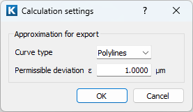

|
|
|


齿形的精度
选择 为 IGES 或 DXF 导出预定义精度（因此也确定文件大小）。

图21.8：计算设置
该条目仅影响 IGES 或 DXF 文件。
在软件中，齿形（每个齿面）用100个点进行计算。这些结果将出现在 TMP 文件（以及报告中）。如果想修改内部计算的点数，只需在 *.Z40 文件中更改相应的条目。前往一个保存的 *.Z40 文件，查找包含 ZSnc.AnzPunkteProFlanke=100 的行；例如，将 100 替换为 40。如果这样做，每个齿面将仅计算 40 个点。
Accuracy of the tooth form
Select to predefine the accuracy (and therefore also the size of the file) for an IGES or DXF export.
Figure 21.8: Calculation settings
This entry only influences IGES or DXF files.
In the software, the tooth form (each flank) is calculated with 100 points. You will find these results in the TMP files (and in the report). If you want to modify the number of internally calculated points, simply change the appropriate entry in the *.Z40 file. Go to a saved *.Z40 file and search for the line that contains ZSnc.AnzPunkteProFlanke=100; and, for example, replace 100 with 40. If you do so, only 40 points per flank will be calculated.